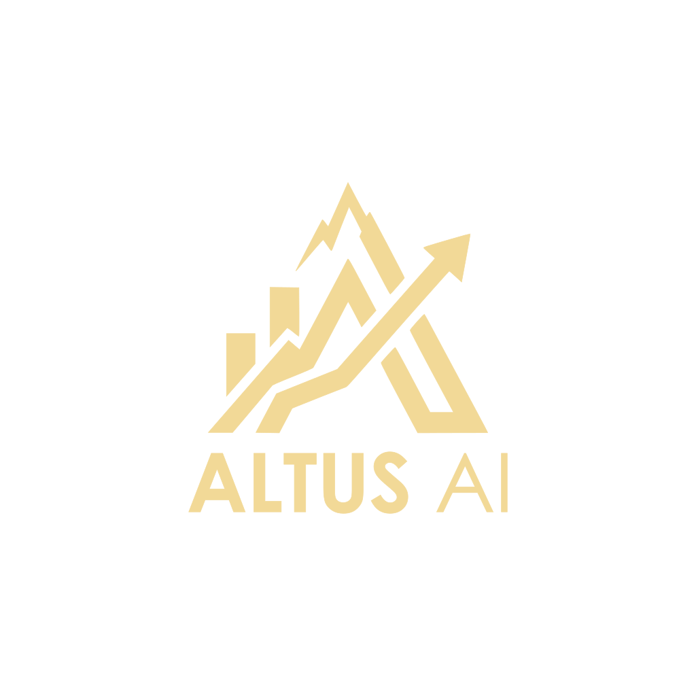

Por años, la industria financiera en Chile ha operado bajo las mismas reglas. El cliente, cansado y confundido, deposita su dinero en un banco, contrata seguros en una corredora y confía sus impuestos a un contador. Sin embargo, nadie tiene la "foto completa". En este modelo fragmentado, el ejecutivo bancario tradicional suele actuar más como un vendedor presionado por metas mensuales que como un verdadero guardián de los intereses de la familia.
Frente a este escenario de incertidumbre, FV Asesorías e Inversiones decidió que era el momento de romper el molde. Nos dimos cuenta de que las familias no necesitan que les vendan más "productos rentables"; necesitan paz mental, certeza estadística y un blindaje real frente a las crisis.
Para lograr este nivel de protección, construimos algo inédito en el mercado nacional: un ecosistema tecnológico impulsado por Inteligencia Artificial y modelos estadísticos institucionales. Nuestra plataforma es hoy un cerebro digital capaz de hacer en segundos lo que a un equipo de analistas de banca privada le tomaría semanas de trabajo manual.
¿Qué significa esto en la práctica? Significa que nuestro sistema puede "leer" automáticamente los documentos bancarios de un cliente, consolidando su patrimonio en un abrir y cerrar de ojos. Significa que, utilizando tecnología de Recuperación Aumentada (RAG), nuestro motor conoce las sutilezas de la Ley de Herencia chilena y propone vehículos de inversión que posean ventajas tributarias. Y lo más importante: significa que sometemos el flujo de caja del cliente a simulaciones extremas (Monte Carlo), garantizándole matemáticamente hasta qué edad le durará su capital manteniendo su estilo de vida.
"La Inteligencia Artificial no reemplaza nuestra cercanía; nos otorga superpoderes para ser los arquitectos definitivos del patrimonio de nuestras familias."
Todo este salto tecnológico debía reflejarse en nuestra identidad. El antiguo logo de FV Asesorías (la moneda) representaba con orgullo nuestro pasado: la figura del Asesor Financiero tradicional que te ayudaba a guardar y proteger tu dinero.
Pero hoy somos mucho más que eso.
Nuestro nuevo logo es el símbolo del futuro. Representa la figura del Arquitecto Tecnológico, aquel que estructura, blinda y proyecta tu patrimonio global sin sesgos comerciales. Sus líneas modernas y colores sobrios reflejan la exactitud matemática y la sofisticación de un verdadero Digital Family Office.
Para garantizar la máxima seguridad y solidez a nuestras familias en esta primera etapa, operamos en alianza exclusiva con los vehículos de inversión y custodia de Principal Financial Group, líder global en gestión de activos. Este respaldo institucional nos otorga una base invulnerable, mientras que nuestra tecnología Altus AI se encarga de estructurar, simular y optimizar el portafolio perfecto dentro de este ecosistema de primer nivel.
Este es solo el primer paso. Nuestro norte estratégico es la arquitectura 100% abierta. Ya estamos trazando la ruta para obtener el registro formal como Asesores de Inversión ante la Comisión para el Mercado Financiero (CMF). Esta evolución institucional nos permitirá integrar, en un futuro cercano, múltiples plataformas globales bajo nuestro modelo de Digital Family Office.
Por ahora, nuestro enfoque no es la masividad, sino la excelencia. Lanzamos esta innovación tecnológica en un formato boutique, atendiendo solo a un grupo selecto de familias y garantizando un nivel de servicio "CEO-style" inigualable.